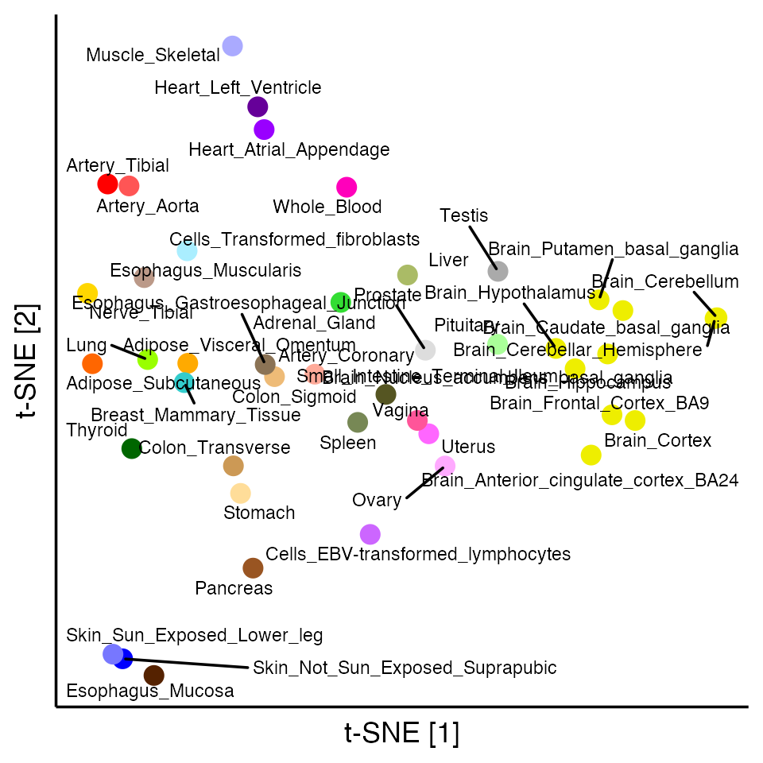

The matrix we analyze in this example is a 1,000 x 44 matrix of z-scores quantifying support for association between genetic variants in the human genome (the rows of the matrix) and gene expression measured across 44 human tissues (the columns):
library(flashier)
data(gtex)
nrow(gtex)
ncol(gtex)
gtex[1:2,1:2]
#> [1] 1000
#> [1] 44
#> Adipose_Subcutaneous
#> ENSG00000099977.9_22_24266954_A_C_b37 8.099352
#> ENSG00000233868.1_2_222475922_A_G_b37 1.079264
#> Adipose_Visceral_Omentum
#> ENSG00000099977.9_22_24266954_A_C_b37 6.4129683
#> ENSG00000233868.1_2_222475922_A_G_b37 -0.7760486The genetic variants are linked to genes, so each row of the matrix corresponds to a gene (the names of the rows are the genes’ Ensembl ids). These z-scores were originally calculated in Urbut et al. (2019) using data made available from the Genotype Tissue Expression (GTEx) project (Lonsdale et al. 2013), so we refer to this as the “GTEx data set.”
Our motivation for factorizing the GTEx data matrix is to identify patterns (“factors”) that give insight into the genetics of the 44 tissues: in particular, which tissues tend to act in concert, and to what degree? First, to get some intuition into the structure of this data set, we visualize the tissues in a 2-d embedding generated by \(t\)-SNE (L. Van der Maaten and Hinton 2008; L. J. P. Van der Maaten 2014; Krijthe 2015):
library(Rtsne)
library(ggrepel)
library(ggplot2)
library(cowplot)
set.seed(1)
out <- Rtsne(t(gtex), dims = 2, perplexity = 10)
pdat <- data.frame(d1 = out$Y[, 1],
d2 = out$Y[, 2],
tissue = colnames(gtex))
ggplot(pdat,aes(x = d1, y = d2, label = tissue)) +
geom_point(size = 3, color = gtex_colors) +
geom_text_repel(size = 2, max.overlaps = Inf) +
labs(x = "t-SNE [1]", y = "t-SNE [2]") +
theme_classic() +
theme(axis.ticks = element_blank(),
axis.text = element_blank())
Visually, one of the predominant trends is the clustering of brain tissues reflecting the greater genetic similarity among brain tissues. But there may be other interesting patterns that are revealed more effectively by a matrix factorization.
The flashier package implements the empirical Bayes matrix factorization (EBMF) framework developed by W. Wang and Stephens (2021). EBMF is based on the following model of an \(n \times p\) data matrix \({\bf X}\):
\[ \mathbf{X} = \mathbf{L} \mathbf{F}^\top + \mathbf{E} \\ e_{ij} \sim \mathcal{N}(0, \sigma^2) \\ \ell_{ik} \sim g_\ell^{(k)} \in \mathcal{G}_{\ell} \\ f_{jk} \sim g_f^{(k)} \in \mathcal{G}_f, \]
where \({\bf L}, {\bf F}, {\bf E}\) are, respectively, matrices of dimension \(n \times K\), \(p \times K\) and \(n \times p\) storing real-valued elements \(l_{ik}\), \(f_{jk}\), and \(e_{ij}\). The matrices \({\bf L}\) and \({\bf F}\) form an approximate low-rank representation of \({\bf X}\), \({\bf X} \approx {\bf L} {\bf F}^\top\), and this low-rank representation is learned from the data. \(K\) specifies the rank of the reduced representation, and is typically set to a positive number much smaller than \(n\) and \(p\).
The flexibility of the EBMF framework comes from its ability to accommodate, in principle, any choice of prior family for \(\mathcal{G}_{\ell}\) and \(\mathcal{G}_f\). As we illustrate below, different choices of prior families can lead to very different factorizations. Some choices closely correspond to existing matrix factorization methods. For example, if \(\mathcal{G}_{\ell}\) and \(\mathcal{G}_f\) are both the families of zero-centered normal priors, then the low-rank representation \({\bf L}{\bf F}^\top\) is expected to be similar to a truncated singular value decomposition (SVD) (Nakajima and Sugiyama 2011). When point-normal prior families are used instead, one obtains empirical Bayes versions of sparse SVD or sparse factor analysis (Engelhardt 2010; Yang, Ma, and Buja 2014; Witten, Tibshirani, and Hastie 2009). Thus, EBMF is a highly flexible framework for matrix factorization that includes important previous methods as special cases, but also many new combinations.
Since fitting the EBMF model can be reduced to solving a sequence of EBNM problems (W. Wang and Stephens 2021), flashier leverages ebnm for the core model fitting routines. In brief, fitting an EBMF model involves solving an EBNM problem separately for each column of \({\bf L}\) and for each column of \({\bf F}\); the former results in a fitted prior \(\hat{g}_{\ell}^{(k)}\) and posterior estimates of entries \(\ell_{ik}\), and the latter results in a fitted prior \(\hat{g}_f^{(k)}\) and posteror estimates of entries \(f_{jk}\). These EBNM models are repeatedly re-fitted until the priors and posterior estimates converge to a fixed point. Therefore, fitting an EBMF model can involve solving many hundreds or even many thousands of EBNM problems. Leveraging the efficient EBNM solvers available in ebnm makes it possible for flashier to tackle large-scale matrix factorization problems.
The flashier function flash() provides the main
interface for fitting EBMF models. The following call to
flash() fits a matrix factorization to the GTEx data with
normal priors on \({\bf L}\) and \({\bf F}\):
flash_n <- flash(gtex, ebnm_fn = ebnm_normal, backfit = TRUE)
#> Adding factor 1 to flash object...
#> Adding factor 2 to flash object...
#> Adding factor 3 to flash object...
#> Adding factor 4 to flash object...
#> Adding factor 5 to flash object...
#> Adding factor 6 to flash object...
#> Adding factor 7 to flash object...
#> Adding factor 8 to flash object...
#> Adding factor 9 to flash object...
#> Adding factor 10 to flash object...
#> Adding factor 11 to flash object...
#> Adding factor 12 to flash object...
#> Adding factor 13 to flash object...
#> Adding factor 14 to flash object...
#> Adding factor 15 to flash object...
#> Factor doesn't significantly increase objective and won't be added.
#> Wrapping up...
#> Done.
#> Backfitting 14 factors (tolerance: 6.56e-04)...
#> Difference between iterations is within 1.0e+02...
#> Difference between iterations is within 1.0e+01...
#> Difference between iterations is within 1.0e+00...
#> Difference between iterations is within 1.0e-01...
#> Difference between iterations is within 1.0e-02...
#> Wrapping up...
#> Done.
#> Nullchecking 14 factors...
#> Done.The “ebnm_fn” argument specifies the prior family for \({\bf L}\) and \({\bf F}\), and accepts any of the prior
family functions implemented in the ebnm package (e.g.,
ebnm_point_normal or ebnm_unimodal; see Table
X for a near-complete list of prior families). Specifying the number of
factors \(K\) is not needed because
flashier automatically tries to determine an appropriate rank by
checking whether the addition of new factors substantially improves the
fit. (If one prefers a smaller number of factors than what is determined
automatically, the maximum number of factors can be adjusted with the
“greedy_Kmax” argument.) Here we also turned on backfitting by setting
backfit = TRUE. This is generally recommended because it
improves the quality of the fit (W. Wang and
Stephens 2021), with the caveat that it may make the model
fitting too slow for very large data sets. Even with backfitting, the
full computation here is very fast; when running this example on a
current MacBook Pro, for example, the model fitting is completed in less
than one second.
The plot() method for flash objects can be used to
visualize the estimated matrix \({\bf
L}\). Adding color to distinguish among tissues yields an
effective visualization that aids interpretation of factors:
plot(flash_n, pm_which = "factors", pm_colors = gtex_colors, plot_type = "bar")
The first factor sets the “baseline” z-score for each tissue. Other factors appear to capture expected trends: for example, factor 2 picks up a z-score pattern that is more dominant in brain tissues. More tissue-specific patterns are picked up by factor 3, which captures whole blood effects, and factor 6, which captures effects more specific to testis.
SVD and SVD-like matrix factorizations may provide compact approximations of a data matrix, but they are generally known to have poor interpretability. “Sparse” factorizations can produce factors that are much more individually interpretable. In the EBNM framework, a sparse matrix factorization can be achieved by choosing a flexible prior family that better encourages sparsity in \({\bf L}\) and/or \({\bf F}\). The flashier interface makes it straightforward to experiment with different prior families; for example, we can use point-normal priors by simply modifying the “ebnm_fn” argument:
flash_pn <- flash(gtex, ebnm_fn = ebnm_point_normal, backfit = TRUE)
plot(flash_pn, pm_which = "factors", pm_colors = gtex_colors, plot_type = "bar")
#> Adding factor 1 to flash object...
#> Adding factor 2 to flash object...
#> Adding factor 3 to flash object...
#> Adding factor 4 to flash object...
#> Adding factor 5 to flash object...
#> Adding factor 6 to flash object...
#> Adding factor 7 to flash object...
#> Adding factor 8 to flash object...
#> Adding factor 9 to flash object...
#> Adding factor 10 to flash object...
#> Adding factor 11 to flash object...
#> Adding factor 12 to flash object...
#> Adding factor 13 to flash object...
#> Adding factor 14 to flash object...
#> Adding factor 15 to flash object...
#> Adding factor 16 to flash object...
#> Adding factor 17 to flash object...
#> Adding factor 18 to flash object...
#> Adding factor 19 to flash object...
#> Adding factor 20 to flash object...
#> Adding factor 21 to flash object...
#> Adding factor 22 to flash object...
#> Factor doesn't significantly increase objective and won't be added.
#> Wrapping up...
#> Done.
#> Backfitting 21 factors (tolerance: 6.56e-04)...
#> Difference between iterations is within 1.0e+02...
#> Difference between iterations is within 1.0e+01...
#> Difference between iterations is within 1.0e+00...
#> Difference between iterations is within 1.0e-01...
#> Difference between iterations is within 1.0e-02...
#> Difference between iterations is within 1.0e-03...
#> Wrapping up...
#> Done.
#> Nullchecking 21 factors...
#> Done.The point-normal priors require estimation of slightly more
parameters than the normal priors, but the call to flash()
is still fast; it took less than 5 seconds to run on our MacBook
Pro.
As before, the first factor acts as a “baseline” and the second factor captures z-scores largely specific to brain tissues. However, there are also some major differences: some factors are much more clearly tissue-specific (e.g., factors 3 and 4 for, respectively, whole blood and testis); other patterns include cerebellar-specific patterns (factor 9) and heart-specific patterns (factor 12). These same patterns are also captured in the matrix factorization with normal priors, but they often appear in combination with other patterns in unintuitive ways.
Another matrix factorization approach that has been recently proposed is semi-nonnegative matrix factorization (Ding, Li, and Jordan 2010; M. Wang, Fischer, and Song 2019; He et al. 2020), in which the elements of either \({\bf L}\) or \({\bf F}\) (but not both) are constrained to be nonnegative. Supposing that \({\bf L}\) is constrained to be nonnegative, the elements \(\ell_{ik} \geq 0\) can be viewed as “weights” or “memberships,” and each row of \({\bf X}\) is then interpretable as a weighted combination of factors: \(x_{i \cdot} \approx \sum_{k=1}^K \ell_{ik} f_{\cdot k}\).
To obtain a semi-nonnegative matrix factorization via flashier, one need only choose appropriate prior families. Here we use point-normal priors for \({\bf L}\) and point-exponential priors for \({\bf F}\); thus we combine the benefits of both semi-nonnegative and sparse matrix factorization. In flashier, we can specify different priors for \({\bf L}\) and \({\bf F}\) by setting the “ebnm_fn” argument to be a list in which the first element is the prior family for \({\bf L}\) and the second the prior family for \({\bf F}\):
flash_snn <- flash(gtex,
ebnm_fn = c(ebnm_point_normal, ebnm_point_exponential),
backfit = TRUE)
plot(flash_snn, pm_which = "factors", pm_colors = gtex_colors, plot_type = "bar")
#> Adding factor 1 to flash object...
#> Adding factor 2 to flash object...
#> Adding factor 3 to flash object...
#> Adding factor 4 to flash object...
#> Adding factor 5 to flash object...
#> Adding factor 6 to flash object...
#> Adding factor 7 to flash object...
#> Adding factor 8 to flash object...
#> Adding factor 9 to flash object...
#> Adding factor 10 to flash object...
#> Adding factor 11 to flash object...
#> Adding factor 12 to flash object...
#> Adding factor 13 to flash object...
#> Adding factor 14 to flash object...
#> Adding factor 15 to flash object...
#> Adding factor 16 to flash object...
#> Adding factor 17 to flash object...
#> Adding factor 18 to flash object...
#> Adding factor 19 to flash object...
#> Adding factor 20 to flash object...
#> Adding factor 21 to flash object...
#> Adding factor 22 to flash object...
#> Factor doesn't significantly increase objective and won't be added.
#> Wrapping up...
#> Done.
#> Backfitting 21 factors (tolerance: 6.56e-04)...
#> Difference between iterations is within 1.0e+02...
#> Difference between iterations is within 1.0e+01...
#> Difference between iterations is within 1.0e+00...
#> Difference between iterations is within 1.0e-01...
#> Difference between iterations is within 1.0e-02...
#> Difference between iterations is within 1.0e-03...
#> Wrapping up...
#> Done.
#> Nullchecking 21 factors...
#> Done.This code returned results in less than 3 seconds on our MacBook Pro.
The result is in many ways strikingly similar to the sparse factorization obtained using point-normal priors. In some cases, the same tissue-specific effects are recovered, up to a difference in signs (e.g., factor 5 for fibroblasts and factor 8 for thyroid). But the semi-nonnegative factorization identifies factors that are arguably more intuitive; for example, point-normal factor 10, which combines artery and adipose tissues, is split into two factors in the semi-nonnegative factorization (factor 9 for artery and factor 11 for adipose tissue).
The flashier package has many more options which we did not explore here, including other choices of prior family, different options for estimating the variances of the residuals \({\bf E}\), and options for fine-tuning the model fitting to improve the speed and quality of EBMF model fits for larger data sets. Many of these options are discussed in the other vignettes.
The following R version and packages were used to generate this vignette:
sessionInfo()
#> R version 4.3.3 (2024-02-29)
#> Platform: aarch64-apple-darwin20 (64-bit)
#> Running under: macOS Sonoma 14.5
#>
#> Matrix products: default
#> BLAS: /Library/Frameworks/R.framework/Versions/4.3-arm64/Resources/lib/libRblas.0.dylib
#> LAPACK: /Library/Frameworks/R.framework/Versions/4.3-arm64/Resources/lib/libRlapack.dylib; LAPACK version 3.11.0
#>
#> locale:
#> [1] en_US.UTF-8/en_US.UTF-8/en_US.UTF-8/C/en_US.UTF-8/en_US.UTF-8
#>
#> time zone: America/Chicago
#> tzcode source: internal
#>
#> attached base packages:
#> [1] stats graphics grDevices utils datasets methods base
#>
#> other attached packages:
#> [1] cowplot_1.1.3 ggrepel_0.9.5 ggplot2_3.5.0 Rtsne_0.17
#> [5] flashier_1.0.53 ebnm_1.1-34
#>
#> loaded via a namespace (and not attached):
#> [1] tidyselect_1.2.1 viridisLite_0.4.2 dplyr_1.1.4
#> [4] farver_2.1.1 fastmap_1.1.1 lazyeval_0.2.2
#> [7] digest_0.6.34 lifecycle_1.0.4 invgamma_1.1
#> [10] magrittr_2.0.3 compiler_4.3.3 rlang_1.1.3
#> [13] sass_0.4.8 progress_1.2.3 tools_4.3.3
#> [16] utf8_1.2.4 yaml_2.3.8 data.table_1.15.2
#> [19] knitr_1.45 prettyunits_1.2.0 labeling_0.4.3
#> [22] htmlwidgets_1.6.4 scatterplot3d_0.3-44 RColorBrewer_1.1-3
#> [25] withr_3.0.0 purrr_1.0.2 desc_1.4.3
#> [28] grid_4.3.3 fansi_1.0.6 fastTopics_0.6-184
#> [31] colorspace_2.1-0 scales_1.3.0 gtools_3.9.5
#> [34] cli_3.6.2 rmarkdown_2.26 crayon_1.5.2
#> [37] ragg_1.2.7 generics_0.1.3 RcppParallel_5.1.7
#> [40] httr_1.4.7 pbapply_1.7-2 cachem_1.0.8
#> [43] splines_4.3.3 parallel_4.3.3 softImpute_1.4-1
#> [46] vctrs_0.6.5 Matrix_1.6-5 jsonlite_1.8.8
#> [49] hms_1.1.3 mixsqp_0.3-54 irlba_2.3.5.1
#> [52] horseshoe_0.2.0 systemfonts_1.0.6 trust_0.1-8
#> [55] plotly_4.10.4 jquerylib_0.1.4 tidyr_1.3.1
#> [58] glue_1.7.0 pkgdown_2.0.7 uwot_0.1.16
#> [61] Polychrome_1.5.1 gtable_0.3.4 quadprog_1.5-8
#> [64] munsell_0.5.0 tibble_3.2.1 pillar_1.9.0
#> [67] htmltools_0.5.7 truncnorm_1.0-9 R6_2.5.1
#> [70] textshaping_0.3.7 evaluate_0.23 lattice_0.22-5
#> [73] highr_0.10 RhpcBLASctl_0.23-42 memoise_2.0.1
#> [76] SQUAREM_2021.1 ashr_2.2-66 bslib_0.6.1
#> [79] Rcpp_1.0.12 deconvolveR_1.2-1 xfun_0.42
#> [82] fs_1.6.3 pkgconfig_2.0.3